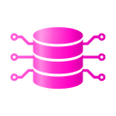

Free & open-source browser agents and browser automation tools (2026)
AgentScout tracks 5,680 AI agent tools across 40 categories and checks every link daily. This page is one slice of that directory: the 27 most-starred browser agents and browser automation tools you can use for free, 25 of them fully open source. Each one links to its listing, code and official site, so you can judge it yourself.
Quick answer: the top picks on this list, ranked by GitHub stars and listing maturity, are Browser Use, Taste Skill and Orca, out of 27 tools listed below. At a glance: 25 open-source, 27 free or freemium and 22 local or self-hosted across 27 link-checked tools (last verified ).
Verified on : every tool link on this page was checked by our daily link check. No paid placements.
Ranked comparison (top 10)
| # | Tool | Pricing | Best for | Open source | Runs locally | GitHub stars |
|---|---|---|---|---|---|---|
| 1 | Open source + cloud | automate the browser | Yes | Self-hosted | 119,558 | |
| 2 | Open source | write code, automate the browser | Yes | Self-hosted | 112,355 | |
| 3 | Open source | write code, automate the browser | Yes | Self-hosted | 110,696 | |
| 4 | Open source | automate the browser, build an agent | Yes | Self-hosted | 90,396 | |
| 5 | Open source | automate the browser, research the web | Yes | Self-hosted | 86,582 | |
| 6 | Open source | write code, automate the browser | Yes | Self-hosted | 54,481 | |
| 7 | Open source | automate the browser, control a computer | Yes | Self-hosted | 39,447 | |
| 8 | Open source | automate the browser, connect tools via MCP | Yes | Self-hosted | 38,849 | |
| 9 | Open source + cloud | automate the browser, automate workflows | Yes | Self-hosted | 37,901 | |
| 10 | Open source | automate the browser | Yes | Self-hosted | 32,628 |
Updated
What browser agents are for
Browser agents let an AI model use the web the way a person does: open pages, click, type, log in and pull out data. Developers use them to automate repetitive web work, test UIs from plain-language steps, give coding agents like Claude Code or Cursor a live browser through MCP, and turn messy sites into clean, LLM-ready data. This list covers libraries, MCP servers, headless browsers, browser extensions and full desktop agents.
The 27 tools
How we picked and ranked: tools are matched by category, the pricing each maker states and what each tool says it does. They are ranked by GitHub stars as recorded on each listing (link checks 2026-11-11); tools without a tracked repo follow, by listing maturity. No paid placements.

1. Browser Use
Browser Use is an MIT-licensed open-source browser agent for Python and TypeScript that lets an LLM navigate sites, fill forms and complete multi-step tasks like booking an appointment, running locally with any model. Browser Use Cloud adds hosted stealth browsers with CAPTCHA handling and residential proxies, a CLI for your own browser tasks, and a hosted agent API.
Pricing (as stated): Open source library is free; cloud browsers from about $0.02 per browser-hour. · Mature

2. Taste Skill
Taste Skill is an MIT Agent Skill that pushes coding agents to build polished company websites instead of generic landing pages, enforcing one design system, plain copy, real photos and brand icons, restrained motion, and a browser-based checker and finish gate that verify the rules before a page is done.
Pricing (as stated): Open source · Mature

3. Orca
Orca is an MIT-licensed desktop app for running a fleet of coding agents such as Claude Code and Codex in parallel on your own subscriptions, each in its own git worktree, with diffs, a built-in browser and a CLI in one place. You can drive an agent in a chat view or its raw terminal and switch between them without losing context, hand a big task to one agent that splits it across worker agents, and keep agents running on a remote Orca server, any SSH host or a cloud VM after you close your laptop; there are mobile apps too.
Pricing (as stated): Free and open source (MIT); you use your own Claude, Codex or other agent subscriptions. · Mature

4. Scrapling
Scrapling is a BSD-3-licensed Python web-scraping framework that covers everything from a single request to a full crawl: fast HTTP fetchers, stealth browsers that can render JavaScript and interact with pages, parsing that adapts when a site's layout changes, and spiders with reusable sessions, proxy rotation, retries, pause and resume and built-in exports. You can use it from Python, the terminal, or an AI agent through its MCP server.
Pricing (as stated): Free and open source (BSD-3-Clause). · Mature

5. Crawl4AI
Crawl4AI is an Apache-2.0 web crawler that turns pages into clean, LLM-ready Markdown, extracts structured JSON and handles browser automation for RAG pipelines and agents, runnable yourself with Python or Docker. Crawl4AI Cloud offers the same capabilities as a hosted scrape, extract and search API with managed browsers and proxies, plus setup for Claude Code, Cursor and Codex.
Pricing (as stated): Open source to self-host; Crawl4AI Cloud includes 1,000 free credits a month. · Mature

6. Chrome DevTools MCP
Official MCP server that lets coding agents control and inspect a live Chrome browser through DevTools for debugging and performance work.
Pricing (as stated): Open source · Mature

7. UI-TARS-desktop
ByteDance's open-source multimodal agent stack, including a desktop app and Agent TARS for controlling computers and browsers.
Pricing (as stated): Open source · Mature

8. Playwright MCP
Microsoft's MCP server giving agents browser control via Playwright.
Pricing (as stated): Open source · Mature

9. Lightpanda
Headless browser written from scratch in Zig for AI agents and automation, built for speed and low memory rather than forked from Chromium.
Pricing (as stated): Open source + cloud · Mature

10. CloakBrowser
Chromium build with source-level fingerprint patches, used as a drop-in Playwright or Puppeteer replacement for agent browsing.
Pricing (as stated): Open source · Mature

11. ScrapeGraphAI
Python library that uses LLMs and graph logic to build scraping pipelines: describe the data you want and it extracts it from websites or documents.
Pricing (as stated): Open source + cloud · Mature

12. Cua
Open-source infrastructure for computer-use agents: sandboxes, drivers across operating systems and benchmarks.
Pricing (as stated): Open source + cloud · Mature

13. OpenCLI
Turns websites into CLI commands and lets agents use your logged-in browser.
Pricing (as stated): Open source · Mature

14. Page Agent
JavaScript in-page agent that controls web interfaces from natural language instructions.
Pricing (as stated): Open source · Mature

15. Stagehand
Browser automation framework mixing code with natural-language actions.
Pricing (as stated): Open source · Mature

16. Skyvern
Automates browser workflows with vision + LLMs.
Pricing (as stated): Open source + paid cloud · Active

17. Moli
Lightweight Rust headless browser for AI agents that fetches pages, searches and extracts content, usable via CLI, CDP or WebDriver.
Pricing (as stated): Open source · Mature

18. ego lite
Free macOS browser where Claude Code or Codex run automation tasks in their own isolated Spaces next to your tabs, reusing your logged-in sessions through an agent skill.
Pricing (as stated): Freemium · Mature

19. Browser Harness
Agent skill from the Browser Use team that lets Claude Code, Codex or Cursor drive your own logged-in Chrome to click, type, read pages and download files.
Pricing (as stated): Open source · Mature

20. Maxun
Turns websites into structured APIs with no-code robots for extraction and monitoring.
Pricing (as stated): Open source + cloud · Mature
21. Browser Use Web UI
Gradio web interface for the Browser Use agent that runs AI browser automation tasks with many LLM providers and your own browser.
Pricing (as stated): Open source · Mature

22. Bolt
Prompt-to-app builder that runs full-stack apps in the browser.
Pricing (as stated): Free tier + paid plans · Mature

23. Google ARTEMIS
Google's tool that turns natural-language instructions into Android automation.
Pricing (as stated): Open source · Mature

24. Cc Haha
Claude Code / AI Agent ： Agent 、Git Worktree、 Diff、 、 、Computer Use、 ； 、 、 H5 。 Local-first Claude Code / AI Agent desktop workspace: multi-agent teams, Git worktrees, diffs, skills marketplace.
Pricing (as stated): Open source + cloud · Mature

25. CloudCLI
A web and mobile interface for Claude Code, Codex and Gemini CLI, so you can run and steer coding sessions from a browser or phone. Self-host free or use the hosted CloudCLI service.
Pricing (as stated): Free to self-host (AGPL); hosted CloudCLI from €7/month. · Mature
26. Nanobrowser
Open-source Chrome extension agent that automates web tasks in your own browser.
Pricing (as stated): Open source · Mature
27. BrowserOS
Open-source agentic browser that runs AI agents locally.
Pricing (as stated): Open source · Mature
FAQ
What are open source browser agents?
Open-source browser agents are tools with public source code that let an AI model drive a real web browser: open pages, click, type, fill forms and pull out data. 25 of the 27 tools on this page are open source, including Browser Use, Taste Skill, Orca.
What are the best free browser automation tools?
Ranked by tracked GitHub stars, the most popular free browser automation tools in our directory are Browser Use, Taste Skill, Orca, Scrapling, Crawl4AI. Stars measure popularity, not fit, so try two or three on your own task.
Are these browser agents really free?
Every tool here is open source or has a free plan. Pricing mix on this page: Open source (17), Open source + cloud (8), Freemium (2). Open-source tools may still need a paid model API key, and some sell an optional hosted cloud.
How many browser agents does AgentScout list?
169 free or open-source tools match browser automation in our directory of 5,680 tools across 40 categories. This page shows the top 27.
You might also like
Related
- All tools for browsing the web
- Best AI Browser Agents
- browser/computer use (94)
- MCP servers (21)
- frameworks (11)
- coding (9)
Similar searches: AI computer-use agents
By role
Browser agents are one corner of AgentScout. Browse all 5,680 tools across 40 categories to find the rest of your agent stack.
Related categories
Facts come from our directory listings; pricing is as each maker states it and can change. Check official sites before you choose.